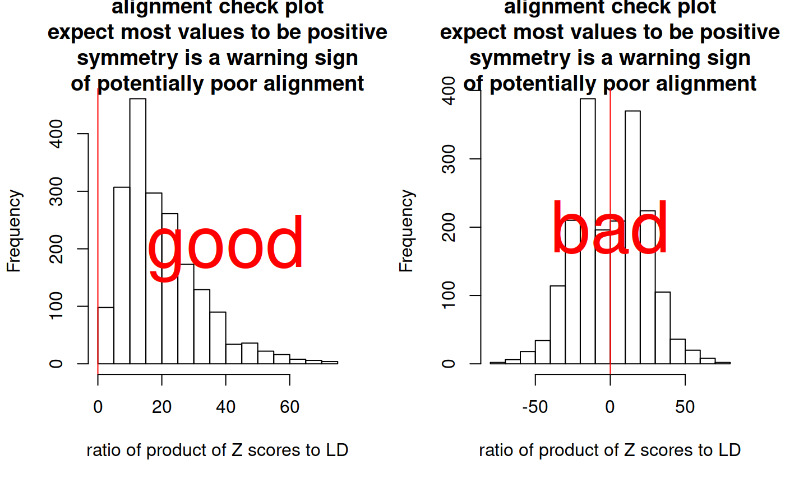

The enumeration approaches to coloc coloc.abf and coloc.susie require the same data format. To be flexible, coloc.abf allows a wider variety of inputs, which can sometimes be confusing. This document aims to set out what ideal and acceptable data structures are.
SNPs must * have summary data available in both studies * cover a single genomic region (perhaps defined by distance about some GWAS peak or delimited by recombination hotspots), and * represent a dense coverage of the region
This can result in up to 10,000 SNPs on larger regions. A single genomic region does not correspond to the whole genome, nor to a whole chromosome. Coloc also does not split chromosomes or a genome into regions. It is assumed the user can look at their data, identify a region with overlapping GWAS signals between two studies, and decide on the set of SNPs to include.
Please do include all SNPs you have in the region: do not trim by significance or MAF or other means. Coloc enumerates all possible configureations of shared and non-shared causal variants and evaluates their relative support; it cannot do this if it does not have all the SNPs available.
Colocalisation and fine-mapping work through evaluating approximate Bayes factors summarising evidence for association at each SNP. This requires knowing the estimated effect size \(\beta\) and its uncertainty \(var(\beta)\). \(var(\beta)\) is the standard error of \(\beta\), squared. It is also good practice to supply SNP names, and SNP positions.
We also need a prior on the true effect sizes at causal variants, which is different depending on whether you have a quantitative or case-control (binary) trait. To estimate a prior, we need to know the trait standard deviation (which allows us to interpret the scale of the estimated beta).
Coloc comes with test data, so you can explore the structure for a quantitative trait. Here we show the minimum dataset needed for a quantitative trait. check.dataset() returns NULL if it finds no errors.
library(coloc)
## This is a new update to coloc.data(coloc_test_data) attach(coloc_test_data) minimum_data=D1[c("beta","varbeta","snp","position","type","sdY")] str(minimum_data)
## List of 6
## $ beta : Named num [1:50] 0.2901 0.2093 0.3003 0.2846 0.0342 ...
## ..- attr(*, "names")= chr [1:50] "s1" "s2" "s3" "s4" ...
## $ varbeta : Named num [1:50] 0.00986 0.01481 0.01041 0.00876 0.02245 ...
## ..- attr(*, "names")= chr [1:50] "s1" "s2" "s3" "s4" ...
## $ snp : chr [1:50] "s1" "s2" "s3" "s4" ...
## $ position: int [1:50] 1 2 3 4 5 6 7 8 9 10 ...
## $ type : chr "quant"
## $ sdY : num 1.38check.dataset(minimum_data)
## NULLFor a case control trait, you would need to give the type as “cc”:
minimum_ccdata=D1[c("beta","varbeta","snp","position")] minimum_ccdata$type="cc" str(minimum_ccdata)
## List of 5
## $ beta : Named num [1:50] 0.2901 0.2093 0.3003 0.2846 0.0342 ...
## ..- attr(*, "names")= chr [1:50] "s1" "s2" "s3" "s4" ...
## $ varbeta : Named num [1:50] 0.00986 0.01481 0.01041 0.00876 0.02245 ...
## ..- attr(*, "names")= chr [1:50] "s1" "s2" "s3" "s4" ...
## $ snp : chr [1:50] "s1" "s2" "s3" "s4" ...
## $ position: int [1:50] 1 2 3 4 5 6 7 8 9 10 ...
## $ type : chr "cc"check.dataset(minimum_ccdata)
## NULLIn either case, you can see that the lengths of beta, varbeta, snp and position are the same. They are assumed to represent the same snps in the same order. If you have your data in a data.frame, you could use as.list() to convert to a list, and then add the other elements, but you cannot pass a data.frame to coloc, because elements like type need to be of length 1.
Often, sdY is not available for quantitative datasets. If the study say they standardised their trait to have variance 1, then you can set =sdY= to 1. Otherwise coloc can estimate it, but not needs MAF and sample size information too. So the dataset would look like:
## List of 7
## $ beta : Named num [1:50] 0.2901 0.2093 0.3003 0.2846 0.0342 ...
## ..- attr(*, "names")= chr [1:50] "s1" "s2" "s3" "s4" ...
## $ varbeta : Named num [1:50] 0.00986 0.01481 0.01041 0.00876 0.02245 ...
## ..- attr(*, "names")= chr [1:50] "s1" "s2" "s3" "s4" ...
## $ snp : chr [1:50] "s1" "s2" "s3" "s4" ...
## $ position: int [1:50] 1 2 3 4 5 6 7 8 9 10 ...
## $ type : chr "quant"
## $ N : int 1000
## $ MAF : Named num [1:50] 0.1235 0.076 0.1155 0.1555 0.0465 ...
## ..- attr(*, "names")= chr [1:50] "s1" "s2" "s3" "s4" ...check.dataset(nosdY_data)
## NULLbeta and varbeta are preferred. Please supply them if you have them, especially in the case of imputed data where they capture the effects of imperfect imputation. But if you don’t have them, coloc can estimate them, given p values, MAF, sample size and, if case-control data, the fraction of samples that are cases:
nobeta_data=D1[c("MAF","snp","position","type","sdY","N")] nobeta_data$pvalues=pnorm(-abs(D1$beta/sqrt(D1$varbeta)))*2 str(nobeta_data)
## List of 7
## $ MAF : Named num [1:50] 0.1235 0.076 0.1155 0.1555 0.0465 ...
## ..- attr(*, "names")= chr [1:50] "s1" "s2" "s3" "s4" ...
## $ snp : chr [1:50] "s1" "s2" "s3" "s4" ...
## $ position: int [1:50] 1 2 3 4 5 6 7 8 9 10 ...
## $ type : chr "quant"
## $ sdY : num 1.38
## $ N : int 1000
## $ pvalues : Named num [1:50] 0.00348 0.08538 0.00325 0.00236 0.81939 ...
## ..- attr(*, "names")= chr [1:50] "s1" "s2" "s3" "s4" ...check.dataset(nobeta_data)
## NULLnobeta_ccdata=D1[c("MAF","snp","position","N")] nobeta_ccdata$pvalues=pnorm(-abs(D1$beta/sqrt(D1$varbeta)))*2 nobeta_ccdata$type="cc" nobeta_ccdata$s=0.5 str(nobeta_ccdata)
## List of 7
## $ MAF : Named num [1:50] 0.1235 0.076 0.1155 0.1555 0.0465 ...
## ..- attr(*, "names")= chr [1:50] "s1" "s2" "s3" "s4" ...
## $ snp : chr [1:50] "s1" "s2" "s3" "s4" ...
## $ position: int [1:50] 1 2 3 4 5 6 7 8 9 10 ...
## $ N : int 1000
## $ pvalues : Named num [1:50] 0.00348 0.08538 0.00325 0.00236 0.81939 ...
## ..- attr(*, "names")= chr [1:50] "s1" "s2" "s3" "s4" ...
## $ type : chr "cc"
## $ s : num 0.5check.dataset(nobeta_ccdata)
## NULLNote that coloc doesn’t mind if your dataset has more entries than it minimally needs, it will use what it needs, preferring supplied beta/varbeta and sdY over estimation, and leave the rest.
coloc.susie
coloc.abf makes the simplifying assumption that each trait has at most one causal variant in the region under consideration. This means it does not need to know about correlation (LD) between SNPs, because no model under consideration has two or more SNPs in it. coloc.susie extends the functionality by allowing more than one causal variant, but this means it needs to know the LD between the SNPs. You may be able to get this from the study data, but if not, reference data such as 1000 Genomes can be used.
Our test data has an LD matrix already. This will be a square numeric matrix of dimension equal to the number of SNPs, with dimnames corresponding to the SNP ids.
str(D1$LD)
## num [1:50, 1:50] 1 0.726 0.775 0.727 0.535 ...
## - attr(*, "dimnames")=List of 2
## ..$ : chr [1:50] "s1" "s2" "s3" "s4" ...
## ..$ : chr [1:50] "s1" "s2" "s3" "s4" ...One of the nice things about coloc is that it does not assume that LD structures are similar between studies, as long as there is a dense map of SNPs across the region. The same thing still applies to coloc.susie, just add an appropriate LD matrix to each study.
beta coefficients in GWAS studies report the effect of one allele with respect to the other. That is, if you see results looking like
| CHR38 | BP38 | REF | ALT | SNPID | P | BETA | SE | maf | maf_cases | maf_controls | |
|---|---|---|---|---|---|---|---|---|---|---|---|
| 1 | 2101817 | G | A | rs908742 | 0.0826 | 0.0749 | 0.0432 | 0.4394 | 0.456 | 0.4391 | |
| 1 | 2109497 | T | C | rs4648808 | 0.8695 | -0.0144 | 0.0877 | 0.9347 | 0.9344 | 0.9347 | |
| 1 | 2126584 | A | G | rs3128291 | 0.7334 | -0.0306 | 0.0897 | 0.939 | 0.9371 | 0.9391 | |
| 1 | 2137467 | G | T | rs3128296 | 0.8802 | -0.0124 | 0.0826 | 0.9268 | 0.9267 | 0.9268 | |
| 1 | 2139901 | C | A | rs424079 | 0.6399 | -0.0207 | 0.0442 | 0.6347 | 0.6269 | 0.6348 |
the beta is telling you about the effect of allele A compared to allele G at the snp rs908742. If the alleles were reversed, beta would be -0.0826. The LD matrix needs to be aligned the same way. This will be easy if you have the GWAS data and are making the LD matrix yourself. If you get it from a public source, it will almost certainly be telling you about the LD between non-reference alleles. In this case, you need to make sure your data is also listing the non-reference allele as the “alternative” or “risk” allele. If it is not, switch the sign of beta.
To avoid hassles, I recommend: * if using GWAS catalog data, download the harmonised version which will do this for you. * if using eQTL summary data that has been processed by the eQTL catalogue, use that version because it will also be harmonised * Otherwise, check the alleles in your summary table match those in the information files from the LD source * Finally, always plot the coloc result with the sensitivity function because weird effects are much easier to understand visually
You can also use the coloc function check.alignment as a visual guide. It comparse the product of the Z scores for all SNP pairs against their correlation, and plots a histogram of this ratio for SNPs in some degree of LD. We do not expect to see strongly negative products of Z scores for strongly positive correlations or vice versa. Therefore this plot should be skewed to have more positive values than negative. Here I show a good (left) and bad (right) example.
par(mfrow=c(1,2)) check.alignment(goodD) text(40,200,"good",col="red",cex=4) check.alignment(badD) text(0,200,"bad",col="red",cex=4)
